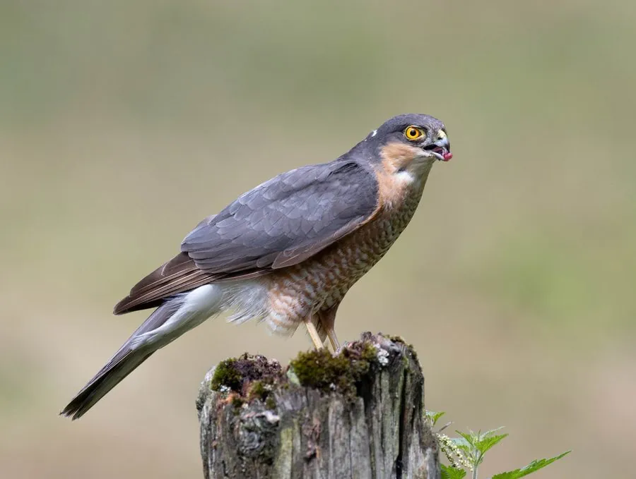

鸟类 · 动物界
雀鹰 Accipiter nisus

体形小巧的林地猛禽，翅膀短、尾羽长，飞行灵活，常在林缘和村庄附近捕食麻雀、山雀等小型鸟类。
- 分类
- 门脊索动物门纲鸟纲目鹰形目科鹰科属鹰属
- 栖息环境
- 林缘、疏林、村庄与城市公园，营巢于高大乔木的树冠层
- 地理分布
- 欧亚大陆和北非，中国从平原到山地均有分布，北方多为候鸟
- 保护级别
- IUCN 无危（LC）；中国国家二级保护动物
物种志
雀鹰雌鸟体长 35–41 cm，雄鸟 28–34 cm；雌鸟体重约 185–342 g，雄鸟约 110–196 g；翼展 56–78 cm。成鸟背部灰褐色，腹部白色并密布细横纹，眼周有淡黄色眉纹，眼睛橙黄色，喙短而钩曲。雌鸟明显比雄鸟大，捕猎对象也更大。
雀鹰广泛分布于欧亚大陆和北非，中国各地从平原到山地都有记录，北方种群冬季南迁。它们栖息在林缘、疏林、村庄和城市公园，主要在飞行中突然加速捕捉麻雀、山雀、鹀类等小型鸟类，也捕食小鼠和昆虫。繁殖期在高树上用树枝搭巢，每窝产卵 4–6 枚，孵化约 32–34 天。由于对控制小型鸟类数量有作用，中国将雀鹰列为国家二级保护动物。
形态与习性
- 食性麻雀、山雀、鹀类等小型鸟类，也吃小鼠和昆虫
- 体长雌鸟 35–41 cm，雄鸟 28–34 cm
- 体重雌鸟 185–342 g，雄鸟 110–196 g
- 翼展56–78 cm
- 繁殖每窝 4–6 枚卵，孵化约 32–34 天
- 寿命野外约 8–10 年
- 习性在林缘低飞，突然加速扑向猎物
趣味知识
- 雀鹰雌鸟比雄鸟大约三成，因此能捕杀更大的鸟类。
- 它常在林缘或村庄树木间低飞，突然加速扑向猎物。
- 雀鹰的名字来自它最常捕食的麻雀等小型鸟类。
- 翅膀短、尾羽长，让雀鹰能在林间快速转向追击。